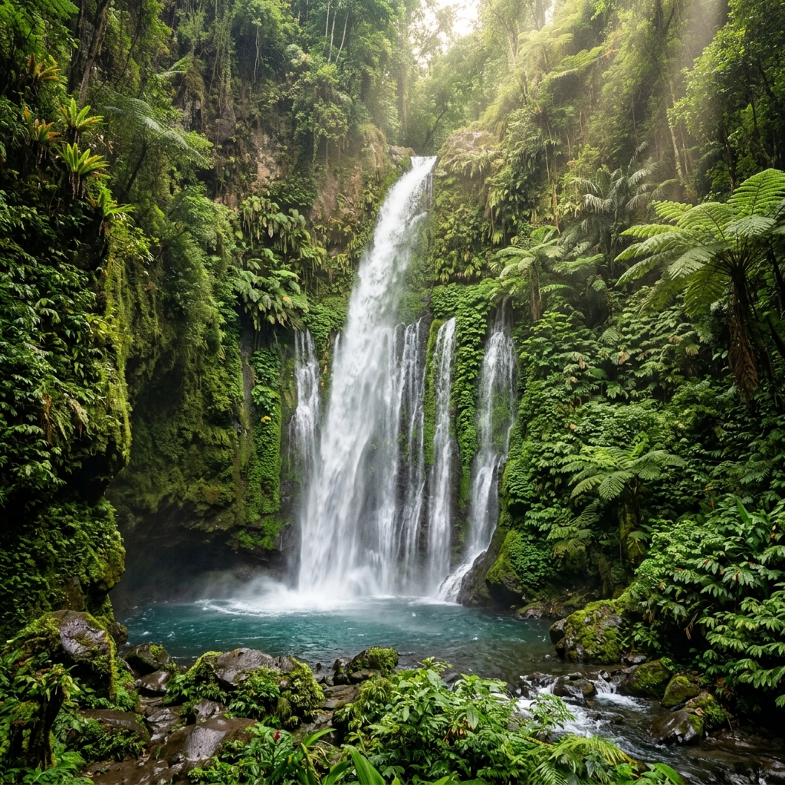
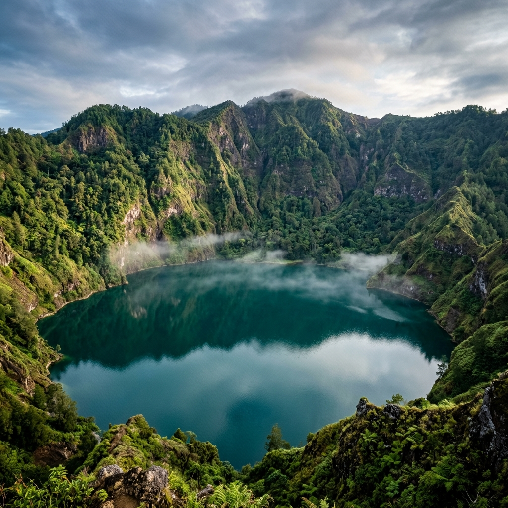

Mata Air Sakral Sejak Tahun Saka 13
Pura Beji Meninting merupakan permata spiritual tersembunyi di Desa Perean yang memiliki nilai sejarah dan budaya yang teramat tinggi. Keberadaannya tidak terlepas dari kisah perjalanan para dewa dalam menjaga keseimbangan alam dan menyembunyikan mata air suci (tirta) lestari di Pulau Bali sejak Zaman Kuno.
Berdasarkan naskah-naskah kuno seperti Lontar Usana Bali, pada Tahun Saka 13 (91 Masehi), wilayah ini ditunjuk sebagai lokasi penyimpanan salah satu Tirta Suci penyelamat bumi. Keberadaan mata air kuno di dalam beji (pemandian suci) tersebut terpelihara dengan sangat asri oleh generasi ke generasi.

Urat Nadi Kehidupan Spiritual Masyarakat Perean
Air yang memancar di Pura Beji Meninting terkenal dengan tingkat kemurniannya yang luar biasa. Berada di celah tebing hijau yang rimbun, gemericik airnya melahirkan aura meditasi yang menyejukkan batin bagi siapapun yang melangkahkan kaki ke dalam area pura.
"Setiap tetes tirta di Beji Meninting memikul memori kuno, menjembatani kehidupan duniawi hari ini dengan kedamaian spiritual ribuan tahun yang lampau."
Ida Pacung Sakti & Pembangunan Kompleks Pura
Perjalanan sejarah beji ini memasuki babak baru berabad-abad kemudian. Sosok ksatria spiritual terkemuka, Ida Pacung Sakti dari Puri Ageng Perean, berperan sentral dalam peresmian pemujaan di tempat suci ini.
Saat beliau memimpin dan mengawasi pembuatan bendungan saluran irigasi tradisional (yang dikenal sebagai empelan) untuk menunjang kehidupan subak, beliau memilih tepi tebing di atas mata air ini untuk melakukan yoga semadi.
Dari proses perenungan suci itulah, beliau menerima petunjuk niskala (wahyu) untuk menata beji tersebut dan mendirikan pelinggih pemujaan permanen. Kompleks pelinggih inilah yang sekarang tegak kukuh menjaga kesucian sumber air.
Puri Ageng Perean
Tokoh historis yang mengawasi kesejahteraan sistem irigasi subak kuno.
Sinergi historis antara bendungan saluran air subak dan pendirian Pura Beji Meninting membuktikan bahwa nenek moyang kita telah mempraktikkan manajemen ekologi berbasis kearifan lokal sejak ratusan tahun lalu. Air tidak hanya dikelola secara fisik, namun juga dimuliakan secara spiritual.
Makna Spiritual & Peran Terhadap Lingkungan
Saat ini, Pura Beji Meninting terus memegang peranan multi-dimensi yang vital bagi kelangsungan hidup adat, sosial, dan pertanian subak di Desa Perean:
Penyucian Diri (Melukat)
Mata air Beji Meninting dipercaya mampu membersihkan noda spiritual, pikiran negatif, dan mendatangkan kedamaian spiritual batin bagi para pemohonnya.
Penjaga Ekosistem Sawah
Debit air konstan dari beji ini adalah tumpuan bagi berjalannya ketahanan pangan subak lokal, menyuburkan hektaran sawah terasering di sekeliling desa.
Cagar Warisan Arsitektur
Kompleks pura melestarikan seni ukir batu padas Bali kuno yang berpadu serasi dengan nuansa lumut alami bebatuan beji yang sakral.
Pusat Harmoni Kosmis
Menjadi tempat pelaksanaan upacara persembahan syukur yang mempertemukan unsur kebersamaan, rasa cinta alam, dan bakti spiritual masyarakat.
Wisatawan yang berkunjung tidak hanya dapat mengagumi keindahan lanskap arsitektur beji ini, tetapi juga berkesempatan untuk merasakan ketenangan absolut yang telah bertahan selama ratusan tahun di Desa Perean.
Tips Berkunjung & Tata Tertib Adat
Untuk menjaga kesucian kawasan Pura Beji Meninting dan kenyamanan bersama, mohon perhatikan beberapa tata tertib dan rekomendasi kunjungan berikut:
Pakaian Sopan & Adat
Gunakan kain sarung dan selendang saat memasuki area pura. Tersedia penyewaan kain di pintu masuk jika Anda belum menyiapkannya.
Hormati Prosesi Ritual
Jika sedang berlangsung upacara adat keagamaan atau prosesi melukat umat lain, mohon selalu menjaga ketenangan dan tidak melintas di depan orang yang sedang bersembahyang.
Aturan Dokumentasi Foto
Anda dipersilakan mengambil foto keindahan tebing dan lanskap pura. Namun, harap meminta izin kepada pemandu jika ingin memotret prosesi ritual secara dekat.
Larangan Masuk Wanita Haid
Demi menjaga kesucian area pura (*kacemaran*), bagi wanita yang sedang dalam masa menstruasi/haid diharapkan untuk tidak melewati batas gerbang utama suci pura.
Dokumentasi Visual & Lanskap Keindahan
Berikut adalah potret dokumentasi visual alam, pura beji, dan lanskap persawahan di sekitar Pura Beji Meninting yang terekam secara alami dan eksotis:

